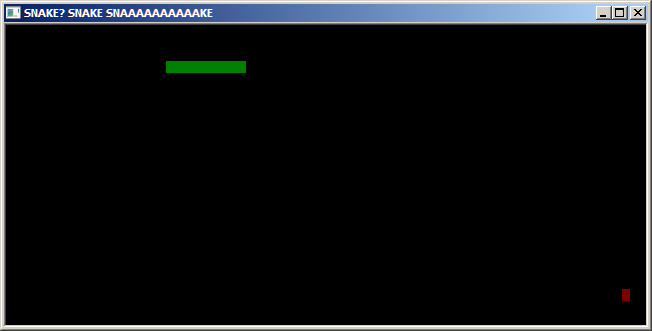

In making snake, we can use a 2 dimensional array of integers to represent segments of the snake, and food pellets. A way to go about doing this is by using -1 as a value for a pellet, 0 as an empty space, and anything 1 and above as a snake.

This image we saw on the intro page can be represented roughly as
00000000000000000000000000000000000000000000000000000000000000000000000000000000 00000000000000000000000000000000000000000000000000000000000000000000000000000000 00000000000000000000000000000000000000000000000000000000000000000000000000000000 000000000000000000001234567891000000000000000000000000000000000000000000000000000 00000000000000000000000000000000000000000000000000000000000000000000000000000000 00000000000000000000000000000000000000000000000000000000000000000000000000000000 .... 0000000000000000000000000000000000000000000000000000000000000000000000000000-1000 00000000000000000000000000000000000000000000000000000000000000000000000000000000 00000000000000000000000000000000000000000000000000000000000000000000000000000000
The head of the snake, as it moves, will set the value of a tile to the integer SnakeLength. This means it'll take that many "turns" for it to expire, which gives the illusion of the snake moving.
When growing the snake, we can just increment SnakeLength and all body tiles (anything >= 1), by a fixed value GrowLength. The snake head can be represented using the following variables.
Our mainloop will consist of the following components:int X; int Y; int Direction; int SnakeLength
- Get player directional input (if it exists)
- Check if input is valid
- Update Direction value if necessary
- Move snake according to direction value
- Check if the new location contains the boundary wall, or a body segment
- If so, end the game
- Check if the location contains food
- If so, update body segment tiles and SnakeLength variable
- Draw the screen on the console
References:
- Me